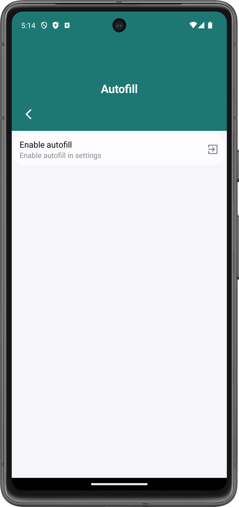
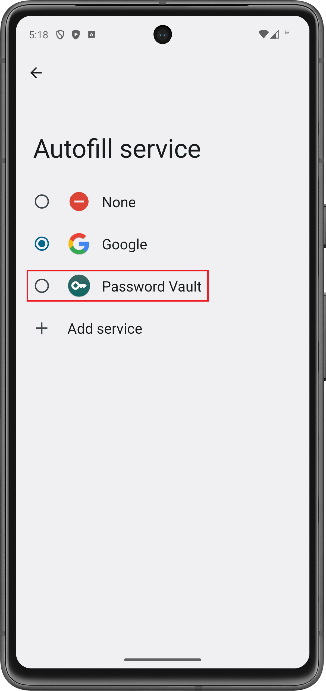
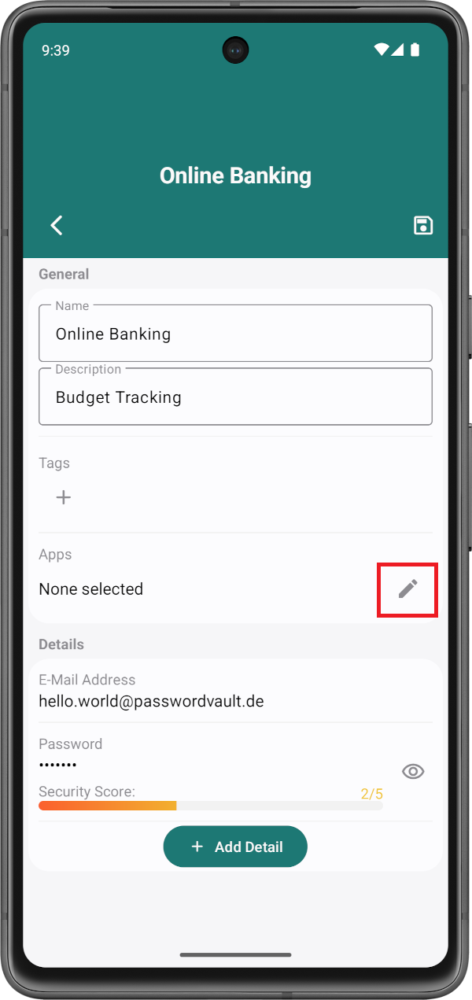
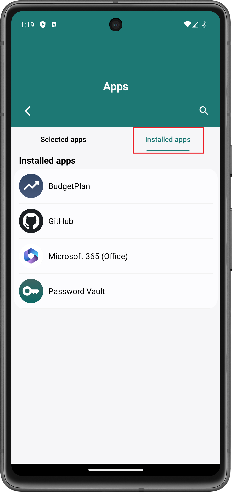
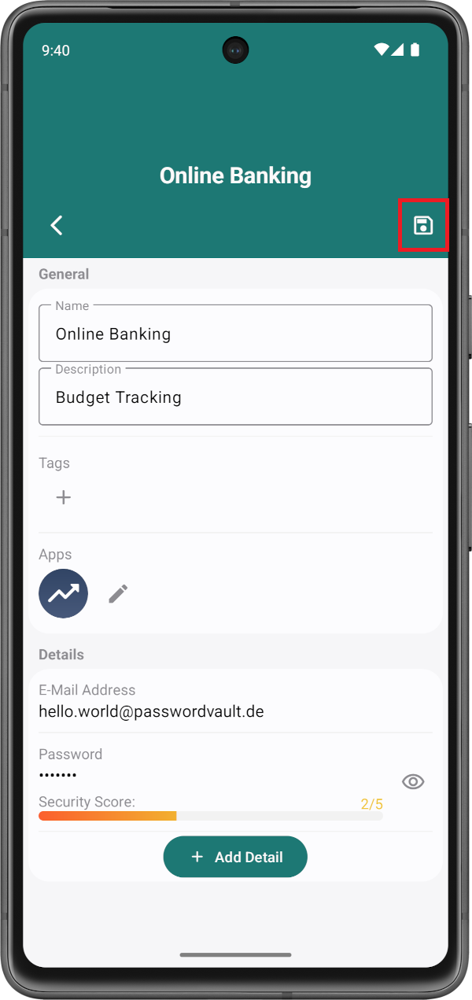
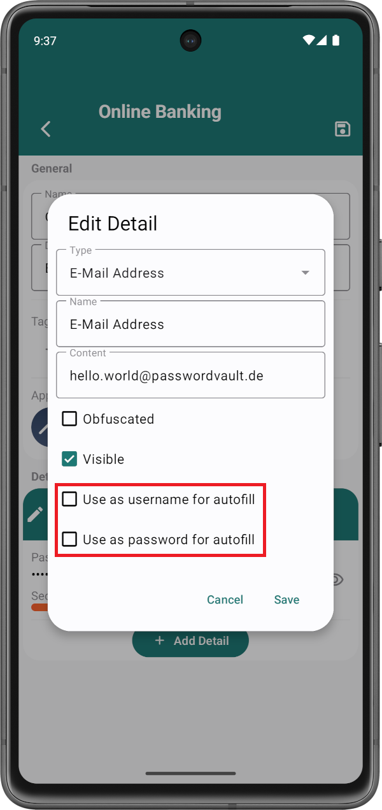
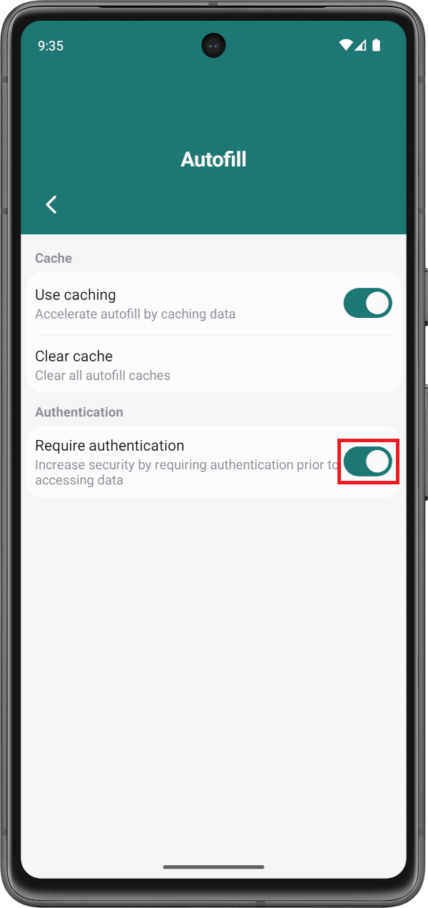
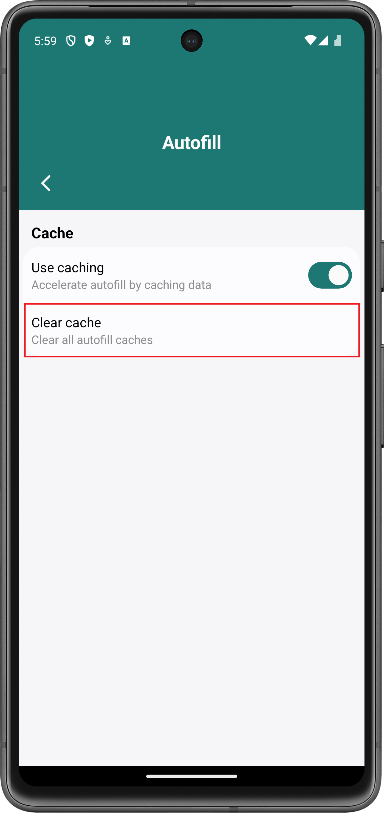

Steigere deine Produktivität, indem du Password Vault erlaubst, Anmeldedaten automatisch in andere Apps einzutragen. Auf dieser Seite findest du Informationen zur Konfiguration dieses Dienstes.
Um den Dienst zum automatischen Ausfüllen zu aktivieren, gehe zu Einstellungen > Automatisches Ausfüllen. Wenn der Dienst noch nicht aktiviert ist, dann wird ein Knopf Automatisches Ausfüllen aktivieren angezeigt:
Wenn du auf diesen Knopf drückst, werden die Einstellungen deines Android-Smartphones geöffnet. Wähle dort Password Vault aus.
Danach ist Password Vault als Dienst zum automatischen Ausfüllen aktiviert.
Zum automatischen Ausfüllen muss Passwort Vault wissen, welches Konto zur Anmeldung in welcher der installierten Apps verwendet werden soll. Dies kann während der Bearbeitung des entsprechenden Kontos eingestellt werden.
Kicke auf die große Box in der oberen linken Ecke des Bildschirmes, um eine App auszuwählen:
Wechselse danach zu Installierte Apps und wähle die Apps aus, welche du mit dem aktuellen Konto automatisch ausfüllen möchtest. Es ist möglich mehrer Apps auszuwählen.
Schließe danach die Seite mit welcher du die Apps ausgewählt hast. Falls du die Konfiguration deines Kontos abgeschlossen hast, kannst du diese Seite ebenfalls schließen:
Üblicherweise wird zum Einloggen in einer App ein Benutzername oder Ähnliches, sowie ein Passwort benötigt. Aus allen verfügbaren Informationen eines Kontos wählt Passwort Vault automatisch einen passenden Benutzernamen, sowie ein passendes Passwort aus. Sollte eine spezielle Information als Benutzername oder Passwort gewählt werden, kann dies beim Bearbeiten der entsprechenden Information definiert werden:
Benutzernamen, die auf diese Weise gewählt werden, werden durch ein E-Mail-Symbol gekennzeichnet. Währenddessen werden Passwörter durch ein Passwort-Symbol gekennzeichnet.
Wenn auf diese Weise mehrere Benutzernamen oder Passwörder gewählt werden, wählt Password Vault jeweils die erste Information aus.
Wenn der App-Login mittels Master-Passwort aktiviert ist, dann wird vor dem automatischen Ausfüllen eine Authentifizierung mittels Master-Passwort oder Biometrie (falls aktiviert) benötigt.
Falls dies unerwünscht ist, kann dies auch deaktiviert werden:
Caching beschleunigt automatisches Ausfüllen, indem die Anmeldedaten in einer separaten (verschlüsselten) Datei gespeichert werden. Dadurch muss Password Vault nicht bei jedem automatischen Ausfüllen die Informationen aller Konten betrachten. Dies kann jedoch deaktiviert werden.
Manchmal kann der Cache jedoch Probleme verursachen. In solchen Fällen kann es hilfreich sein den Cache zu leeren. Klicke hierzu auf den Cache leeren-Knopf:
